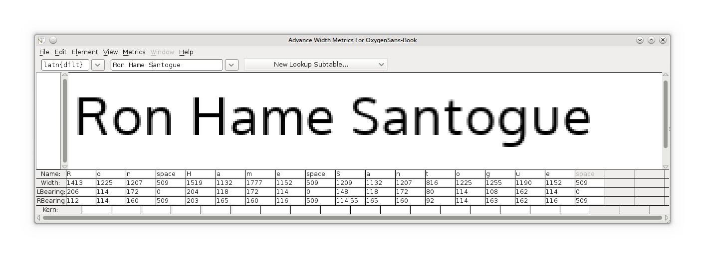

OXYGEN FONTS
a typeface for the Gnu+Linux desktop
OXYGEN FONTS
a typeface for the Gnu+Linux desktop
 OXYGEN FONTS
a typeface for the Gnu+Linux desktop
OXYGEN FONTS
a typeface for the Gnu+Linux desktop


About Oxygen Fonts
The Oxygen fonts are a Free Software typeface family being developed for use with the KDE desktop and GNU+Linux systems in general. The aim is to extend the choice of UI type families available for Free Software desktops and devices.
The Oxygen fonts are being developed in various weights and includes the development of 'Oxygen Mono', a monospaced font for use in terminals and for coding.
Legibility and Function
The Oxygen fonts are designed primarily for optimised functionality on various types and sizes of screens. The fonts are designed to be functional; spartan and uncluttered, but with enough stylistic detailing to add distinction at larger sizes. Part of the brief in designing the Oxygen Fonts is that they could also be used for print and web 'branding' of free desktops.
The large x-height (above) ensures that text is clearly readable at standard desktop UI text sizes, even under lesser display options, or when viewed on small handheld devices.
Free Software
The Oxygen Fonts are published under the Open Font License and the Gnu Public License. These licenses ensure that the fonts are freely available to all. The fonts can be downloaded, printed in commercial and non-commercial works, served as webfonts, embedded in documents, software and hardware, and shared and distributed freely.

The Fonts have been predominantly developed 'natively' on GNU+Linux systems, mainly using FontForge. This has allowed the fonts to be developed closely with Freetype's render and hinting engines, so that the fonts can be optimised with the pixel grid fitting on Freetype based OS's such as the various GNU+Linux systems, including Chrome OS and Android.
Roadmap
The Oxygen Fonts have been slowly under development for over 12 months. It is now planned to raise development funding via indiegogo so that the fonts can be developed further and completed in a more concentrated effort.
Six weights of Oxygen Sans are planned; Thin,Light,Regular,Medium,Bold,Heavy, plus italics, and two weights of Oxygen Mono;00 Regular and Bold
Non Latin Support
An aim of the next phase of the development of the Oxygen Fonts is to provide full support for Cyrillic and Greek scripts.
Getting Oxygen Fonts
The fonts can be downloaded as font files, or you can clone and pull the whole development repository from github.
the Oxygen Fonts are maintained by vernnobile on github | this site is published with GitHub Pages, Jekyll and Bootstrap